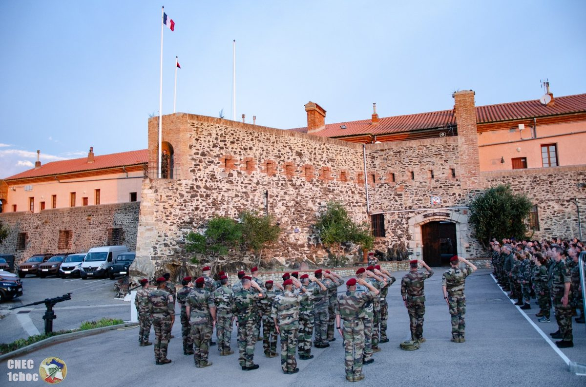
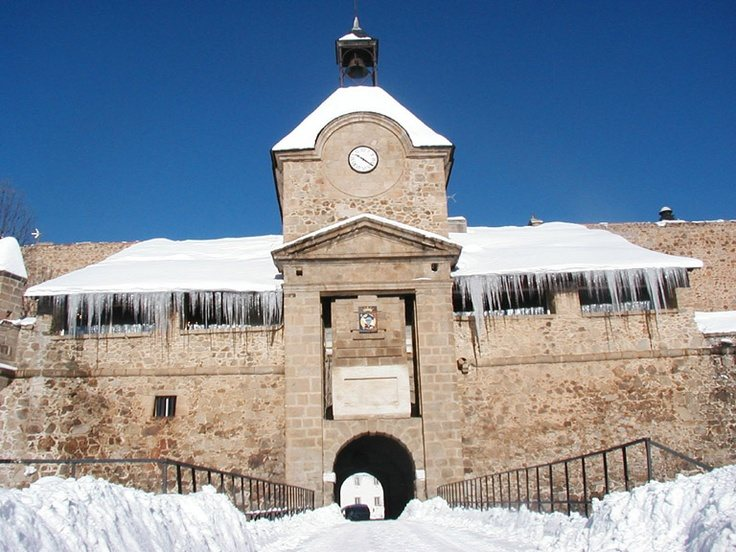

Ravivage de la flamme, 22 mai
Une délégation de l'amicale a ravivé la flamme sous l'Arc de Triomphe à l'occasion de l'anniversaire de la création du Bataillon de choc.
24 mai 2026 Amicale des anciens du 1er Bataillon de choc et du C.N.E.C.
Amicale des anciens du 1er Bataillon de choc et du C.N.E.C.
« En pointe toujours »
L'amicale rassemble les anciens du 1er Bataillon de choc, du 1er Régiment de choc et du Centre national d'entraînement commando, autour de trois idées simples : la mémoire, la solidarité et le lien entre les générations.

Piste d'audace, franchissements et parcours du bord de mer : le site méditerranéen du centre, au pied des Albères.

Aguerrissement en altitude dans la citadelle classée au patrimoine mondial, cadre des stages commando depuis 1964.
Une délégation de l'amicale a ravivé la flamme sous l'Arc de Triomphe à l'occasion de l'anniversaire de la création du Bataillon de choc.
24 mai 2026L'AG se tiendra les jeudi 15 et vendredi 16 octobre à Collioure, organisée par la délégation Languedoc-Roussillon. Bulletin de participation à retourner avant le 1er juillet.
12 mai 2026La commission mémoire recherche photos, carnets de stage et souvenirs des promotions passées à Mont-Louis.
3 avril 2026L'association s'interdit toute activité à caractère politique ou confessionnel. Elle est fondée sur la solidarité entre les anciens et sur la transmission de la mémoire des unités de choc et des commandos.
Jeudi 15 et vendredi 16 octobre 2026 — Centre culturel de Collioure. Inscription avant le 1er juillet.
S'inscrireRéédition limitée à 300 exemplaires, numérotée, au profit de la caisse d'entraide.
Voir la boutique